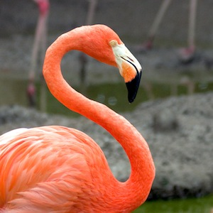

About Me

Hi, In six months I will be a Full Stack Developer with strong User Experience skills. Having worked as an Architect, Urban Planner and User Experience Designer, I developed a huge passion for Front End Development. 'Never Stop Learning' is what I believe, because, it has the ability to expand mindset and facilitates personal growth. By embracing a student-like mindset and learning to turn self-education into a daily habit, one can hone current skills and develop new ones while enriching the mind.
Reusing the waste is my guilty pleasure. Even a small bottle can be a artifact. Its something that make me happy when i make a useful artifact out of waste.
Connect with me